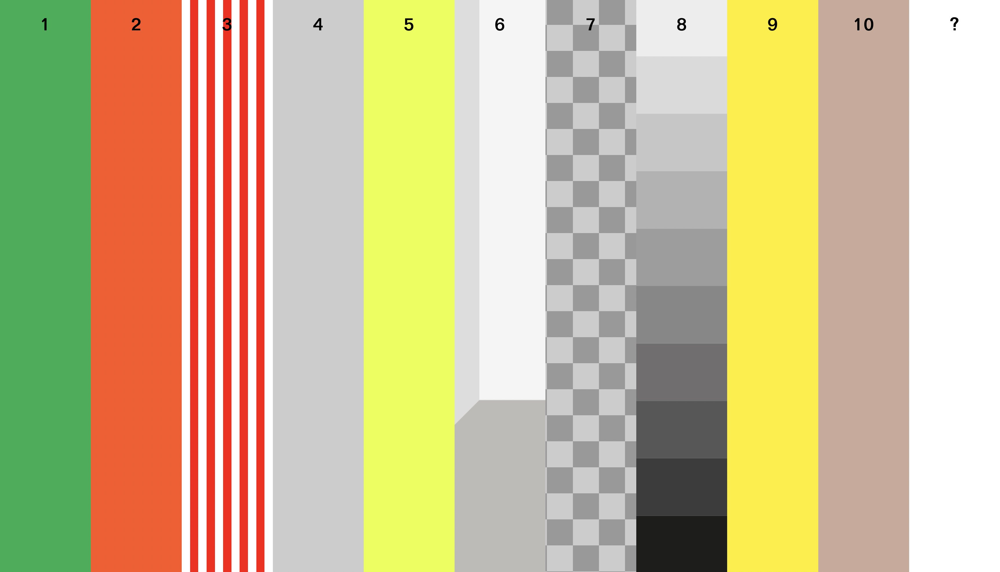
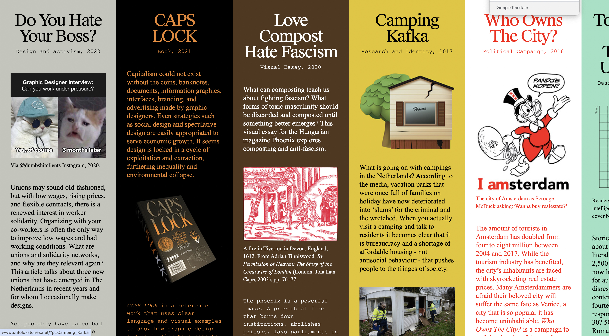
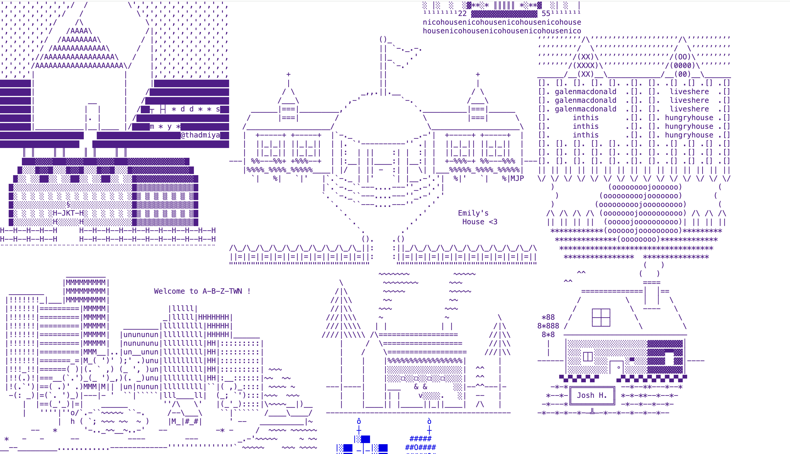

첫 번째
10가지의 전시회를 소개하는 웹사이트이다.처음에 들어가면 전시와 관련된 색상 또는 패턴이 나온다.이것을 보고 선택하여 들어가면 전시의 소개가 나오는데 배경 또한 관련된 색상으로 바뀌어서 디지털 전시회를 보는 것 같아서 좋았다. 특히 인상 깊었던 것은 ‘BAR BASSO’에서 디지털 드로잉을 사용하여 스케치한 전시이다. 흰색과 빨간색의 줄무늬 패턴인 배경과 약간 장난스러움과 귀여운 그림들과 분위기가 잘 맞는다고 생각했다.PC로 웹사이트를 들어갔을 때 큰 화면에 맞게 한 줄에 최대 4개의 사진들이 진열이 되어있다. 모바일로 들어갔을 때는 작은 화면인 만큼 보기 편하게 사진들이 하나씩 큼직하게 있어서 스크롤 하여 한눈에 볼 수 있어서 좋았다.
두 번째
사람들이 잘 모를만한 사회적인 숨겨진 이야기, 문제들을 소개하는 웹사이트이다. 위에 있는 좌우 화살표를 이용하면 관련된 내용들이 나온다. 글씨와 배경의 색상이 내용과 맞게 구성이 되어있어 구분이 잘 되고 내용이 조금 더 궁금해졌다. 자세히 보기 위해 선택하여 들어가면 큰 제목 아래에 오른쪽에는 이미지가 들어가 있고 왼쪽에는 글이 있다. 내용 구분에 따라 글자의 크기와 서체가 달라서 보기 편했다. 자간 또한 서체에 따라 다른 넓이여서 한눈에 들어왔다. 상단에 홈으로 가는 버튼과 ‘i’가 있는데 이것을 누르면 내용에 해당되는 정보들이 나오는 것이 좋았다. PC로 이 웹사이트를 방문했을 때는 내용들이 세로로 되어있고 글과 사진도 작게나마 볼 수 있다. 모바일로 들어가면 화면에 맞춰 제목만 볼 수 있게 하고 좌우 화살표가 없어지고 상 하로 스크롤 하여 편하게 볼 수 있었다.
세 번째
특수문자와 영어 글자로 건물들을 만들어 놓은 웹사이트이다. 평범한 주택의 느낌인 집들도 있고 궁전, 산, 높은 빌딩 등 개성이 있는 건물들이 있다. 건물들을 들어가면 귀여운 동물들, 화장실, 내부를 디자인 한 것들이 귀여웠다. 나도 내 건물을 만들어서 넣어두고 싶었다. PC로 이 웹사이트를 들어갔을 땐 여러 건물들을 붙여놔서 한 동네 같은 느낌이 든다. 모바일은 한 동네 같은 느낌보다는 크게 하나씩 볼 수 있어서 모바일 버전도 좋았다.